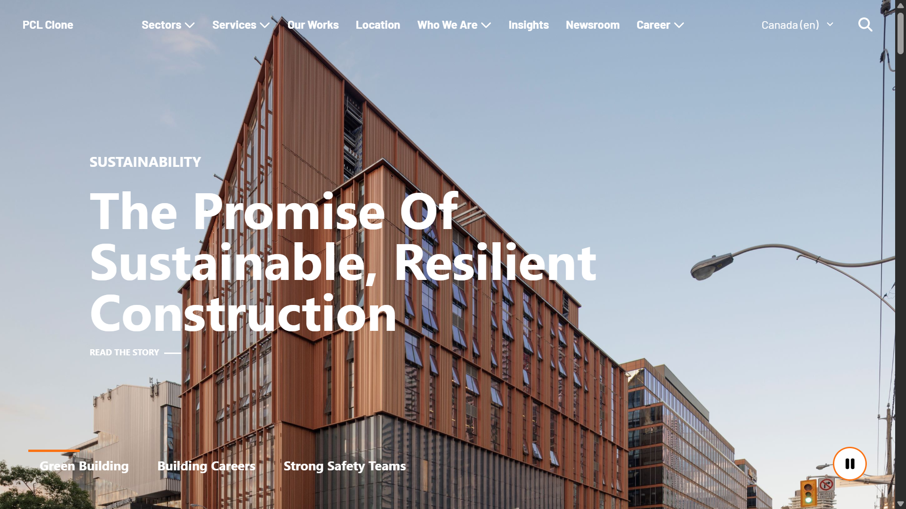

PROJECT 01 · REACT / JS
PCL Construction Clone
A faithful recreation of the PCL Construction corporate homepage, built from scratch using pure React, and vanilla JavaScript. Demonstrates mastery of web fundamentals without any framework.
- Responsive multi-column layout with TailwindCSS
- Sticky navigation with scroll-triggered behavior
- Animated hero and section transitions
- Cross-browser compatible CSS with custom properties